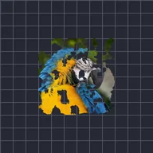

Неровные края

Разъедает края непрозрачных участков шумом, создавая рваный, изношенный или обожжённый контур.
Настройки
| Настройка | Тип | Диапазон | По умолчанию |
|---|---|---|---|
| Рамка | Число | от 0 до 300 | 12 |
| Шероховатость | Число | от 0 до 1 | 0.6 |
| Масштаб | Число | от 0.05 до 20 | 1 |
| Эволюция | Число | от -50 до 50 | 0 |
| Сид | Число | от 0 до 5 | 0 |
| Октавы | Число | от 1 до 9 | 6 |